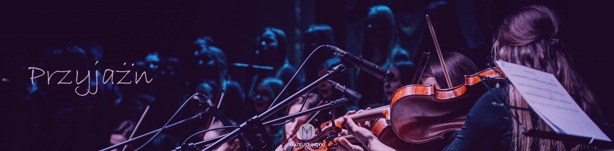
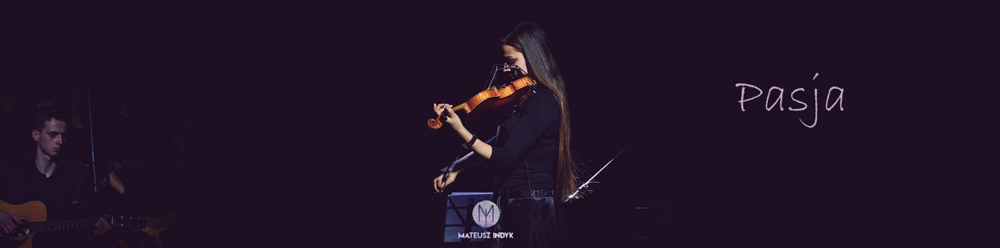
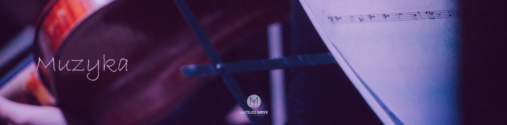

"Or_kiestra to nie tylko zespół ludzi którzy, którzy grają, dają koncert i rozchodzą sią do domu. To jest jeden wielki krąg przyjaciół. "

"Będąc w Or_kiestrze cieszę sie chwilą, poznaję nowe brzmienia, a przede wszystkim poznaję siebie. "

"Harmonia, jaką tworzymy śpiewem, w połączeniu z instrumentami, daje mi wielki spokój, radość i spełnienie. "
2020 © Anna Sus